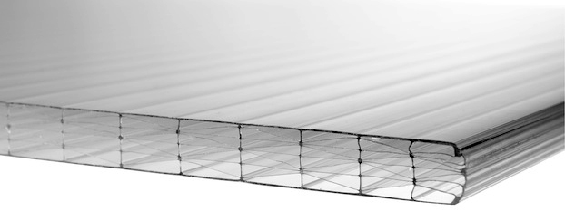
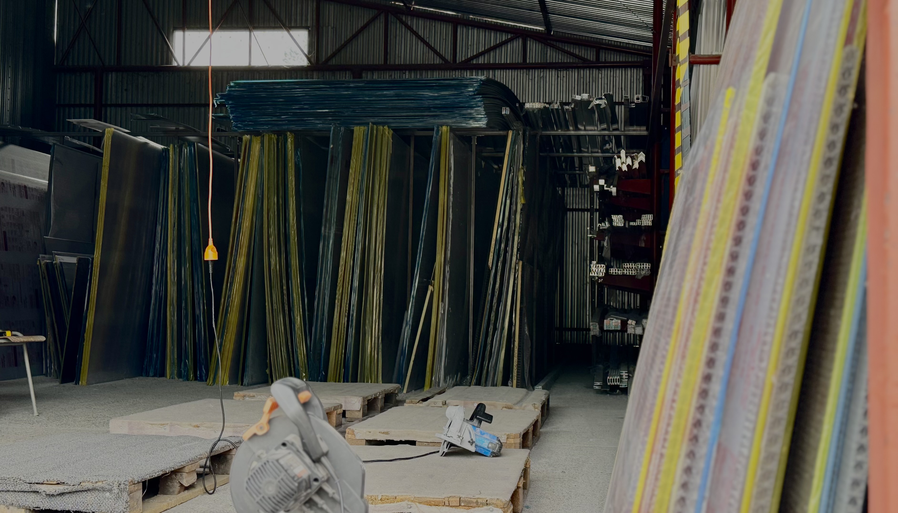
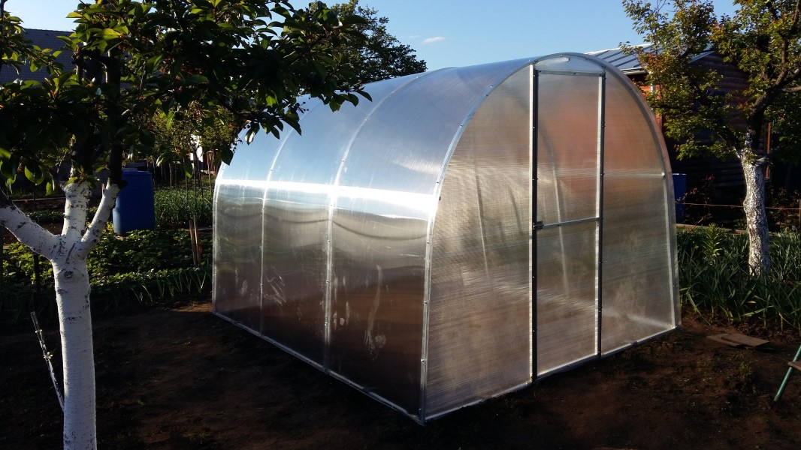
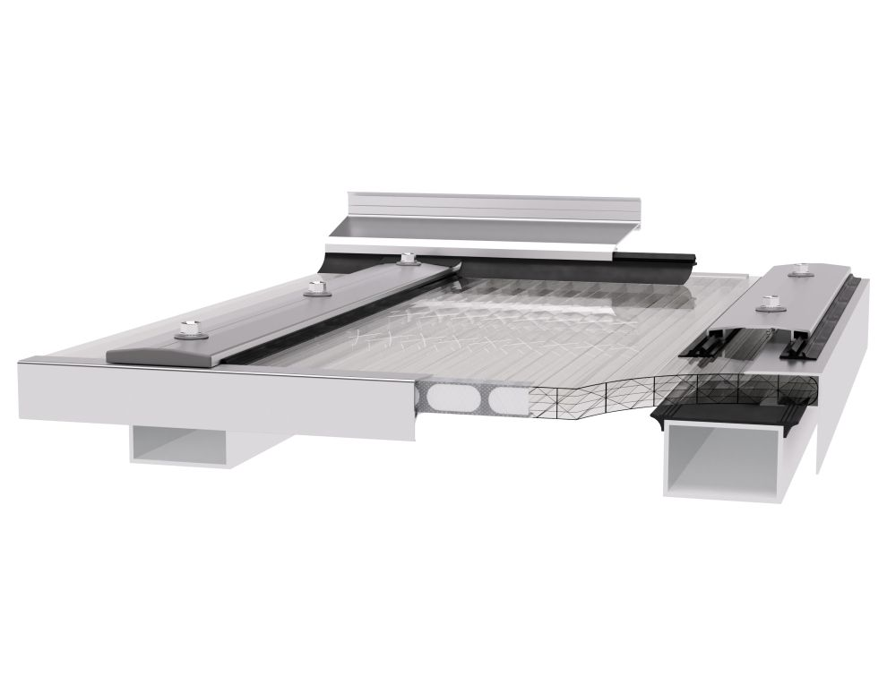
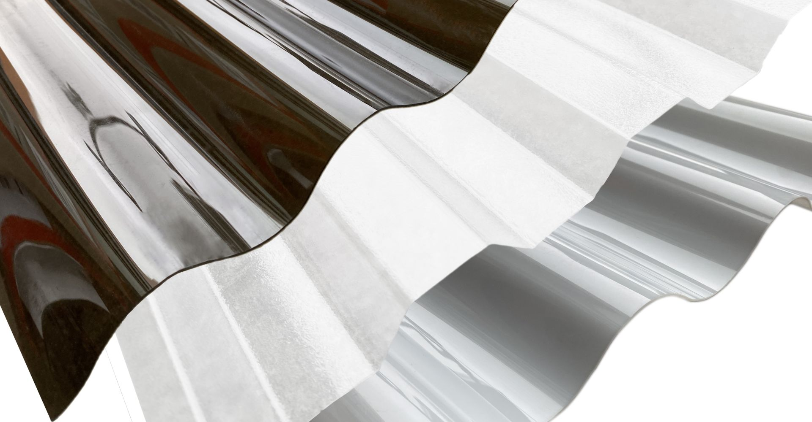

Naša spoločnosť sa už viac ako 23 rokov špecializuje na predaj a distribúciu dutinkových a plných polykarbonátových dosiek značiek LEXAN® a ARLA, ktoré patria medzi absolútnu svetovú špičku v oblasti výroby vysoko kvalitného polykarbonátu. Tieto značky sú známe svojou dlhodobou spoľahlivosťou, výnimočnou pevnosťou a obojstrannou UV ochranou, čím výrazne prevyšujú konkurenčné materiály na trhu.
K doskám ponúkame kompletné montážne príslušenstvo, čo nám umožňuje zabezpečiť zákazníkom všetko potrebné na jednom mieste – efektívne, rýchlo a bez starostí.


Našim zákazníkom zároveň poskytujeme aj široký sortiment ďalších kvalitných stavebných materiálov, čo nás radí medzi najkomplexnejších dodávateľov v tomto segmente. Veľký dôraz kladieme na dôslednú technickú podporu, osobný prístup a individuálne poradenstvo pri výbere vhodného riešenia – bez ohľadu na veľkosť zákazky.
Sme hrdí na to, že našim klientom dokážeme byť oporou v celom procese: od plánovania projektu, cez odbornú konzultáciu, prípravu materiálu, až po samotnú realizáciu a montáž.
Naša práca je založená na profesionalite, spoľahlivosti a dlhoročných skúsenostiach, vďaka čomu si udržiavame stabilné postavenie na trhu a dôveru širokého spektra zákazníkov – od jednotlivcov, živnostníkov až po stavebné firmy.
Vysokokvalitné dutinkové polykarbonátové platne pre rôzne aplikácie. Výborná izolácia, odolnosť a svetelnost pre skleníky, pergoly a fasády.
Plné polykarbonátové dosky s vysokými mechanickými vlastnosťami. Ideálne pre náročné aplikácie vyžadujúce maximálnu pevnosť a priehladnosť.
Vysokokvalitné HPL a Bond dosky pre vonkajšie aj vnútorné použitie. Výborná odolnosť proti počasiu a mechanickému poškodeniu.
Kompletné príslušenstvo pre montáž polykarbonátov - profily, tesniace pásy, spojo-vacie prvky a montážne materiály.
Polykarbonátové trapézy a vlnovky pre streché, pergoly a tieňovacie systémy. Rôzne profily a hrubky podľa požiadaviek.
Kompletné skleníky z polykarbonátových panelov. Odborná montáž a servis. Ideálne pre pestovacie účely a ochranu rastlín.
Všetky polykarbonátové dosky dodávame výlučne od renomovaných značiek LEXAN® a ARLA, ktoré predstavujú najvyššiu kvalitu v oblasti 100% polykarbonátu. Vďaka obojstrannej UV stabilizácii a výnimočnej mechanickej pevnosti sú ideálnou voľbou pre exteriérové aplikácie – od prístreškov a altánkov, skleníky-lexaníky, cez svetlíky až po zimné záhrady. Technické certifikáty a vyhlásenia o zhode sú k dispozícii na vyžiadanie.


Okrem dodávky materiálu poskytujeme aj odbornú montáž dutinkových a plných polykarbonátových dosiek značky LEXAN® a ARLA na už hotové konštrukcie.
Zabezpečuje ju náš skúsený tím technikov, prípadne spolupracujeme s overenými zámočníkmi a stolármi pri výrobe a montáži prístreškov, zimných záhrad, balkónov, skleníkov-lexaníkov či iných stavieb.
Naše pobočky nájdete v Trnave, Senci a Piešťanoch, kde vám radi poskytneme osobné odborné poradenstvo a cenovú ponuku na mieru zdarma, alebo si u nás môžete vyzdvihnúť materiál priamo na mieste.
Pre ešte väčší komfort našich zákazníkov ponúkame aj výhodnú dopravu zakúpeného materiálu kamkoľvek na Slovensku, najmä v okolí uvedených miest:
Trnava, Senec, Piešťany, Bratislava, Hlohovec, Sereď, Galanta, Senica, Skalica, Malacky, Nitra, Pezinok, Modra, Dunajská Streda, Nové Zámky, Nové Mesto nad Váhom a Trenčín.
Doprava je zabezpečovaná našim vozidlom promptne, spoľahlivo a za rozumné ceny, aby ste svoj materiál mali vždy včas tam, kde ho potrebujete.
